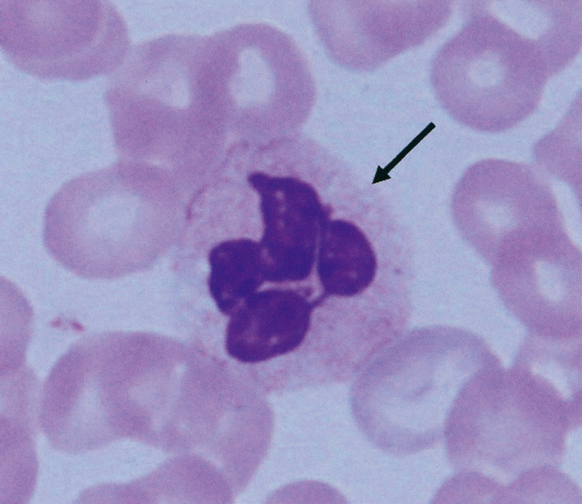

| 種類 | 血中濃度 | 構造 | 主な特徴 |
|---|---|---|---|
| 種類 | 血中濃度 | 構造 | 主な特徴 |
| IgG | 最多（75%） | 単量体 | 胎盤通過性、補体活性化（古典）、再感染時主体 |
| IgA | 2位 | 2量体（分泌型） | 粘膜免疫の主役、唾液・母乳・腸液 |
| IgM | 3位 | 5量体 | 初感染早期に産生、補体活性化（最強） |
| IgD | 微量 | 単量体 | B細胞表面マーカー（機能不明） |
| IgE | 最少 | 単量体 | I型アレルギー、寄生虫防御 |
| マーカー | 意味 |
| HBs抗原陽性 | 現在のHBV感染（活動性） |
| HBc抗体陽性 | 過去または現在のHBV感染既往 |
| HBs抗体陽性 | HBV既往感染 or ワクチン接種 |
| HBV-DNA定量 | 再活性化の有無・程度を評価する |
| 機序 | 代表疾患 |
| 産生低下 | 肝硬変・劇症肝炎・肝不全（補体は肝臓で合成） |
| 消費亢進 | SLE、急性糸球体腎炎（溶連菌後）、クリオグロブリン血症、悪性RA |
| 先天性欠乏 | C3欠乏症、C1q欠乏症など（まれ） |
| サイトカイン | 主な作用 | CRP誘導 |
| IL-6 | 急性期反応誘導、B細胞分化 | 主要（直接） |
| IL-1 | 発熱・IL-6産生促進 | 間接的 |
| TNF-α | 炎症・カヘキシア | 間接的 |
| TGF-β | 免疫抑制・線維化 | 誘導しない |
| IFN-γ | 細胞性免疫活性化・Th1 | 誘導しない |
| 選択肢 | 判断 |
| ａ ST合剤 | ニューモシスチス予防薬→骨髄抑制を悪化させうる、不適 |
| ｂ 抗真菌薬 | 真菌感染の証拠なし、不適 |
| ｃ 活性型葉酸 | MTX中毒の解毒→正解 |
| ｄ ビタミンB | MTX中毒に無効 |
| ｅ 副腎皮質ステロイド | 感染悪化リスク、骨髄抑制状態に不適 |
| 分類 | 細胞 | 特徴 | タイミング |
| 自然免疫 | NK細胞 | MHCクラスI欠失細胞を傷害（ウイルス感染細胞・腫瘍細胞） | 即時（0〜数時間） |
| 自然免疫 | マクロファージ | 貪食・炎症性サイトカイン産生・抗原提示 | 即時 |
| 自然免疫 | 好中球 | 細菌貪食（ウイルスへの役割は限定的） | 即時 |
| 獲得免疫 | T細胞（CD8 CTL） | MHCクラスI上に提示されたウイルス抗原を認識 | 数日後 |
| 獲得免疫 | B細胞・形質細胞 | 抗体産生 | 1〜2週間後 |
| 薬剤 | 妊娠との関係 |
| メトトレキサート（MTX） | 催奇形性（禁忌）→妊娠3か月前から中止 |
| サラゾスルファピリジン | 比較的安全（葉酸補充を忘れずに） |
| タクロリムス | 低用量なら使用可（要個別判断） |
| エタネルセプト（抗TNF） | 妊娠初中期は比較的安全、後期は避ける |
| インドメタシン（NSAID） | 妊娠後期は胎児動脈管閉鎖リスク→避ける |
| プレドニゾロン（ステロイド） | 低用量は妊娠全期間比較的安全 |
| 選択肢 | 評価 |
| ａ NSAIDの中止 | 根本治療にならない |
| ｂ JAK阻害薬の追加 | 免疫抑制強化→悪化リスク |
| ｃ 抗TNF-α抗体の追加 | 免疫抑制強化→悪化リスク |
| ｄ プレドニゾロンの中止 | MTX-LPDではなくMTXが問題 |
| ｅ メトトレキサートの中止 | MTX-LPD対応の第一選択→正解 |
| 標的 | 薬剤名 | 特徴 |
| TNF-α | インフリキシマブ・アダリムマブ・ゴリムマブ | 最初に承認、結核再活性化注意 |
| IL-6受容体 | トシリズマブ | CRPが著明低下する |
| IL-6 | サリルマブ | |
| CD20（B細胞） | リツキシマブ | 難治性RA |
| T細胞共刺激 | アバタセプト（CTLA4-Ig） | CD28-CD80/86共刺激阻害 |
| 検査 | 評価 |
| HbA1c | 長期指標（3か月平均）→ 急性期のステロイド糖尿病発見に不向き |
| 早朝空腹時血糖 | ステロイド糖尿病では正常→見逃しやすい |
| 早朝空腹時尿糖 | 血糖閾値以上にならないと出ない→感度低 |
| 昼食後2時間血糖 | ステロイド血糖上昇が最大の時間帯→効率的 |
| 75gOGTT | 繰り返しには侵襲的・不向き |

| 機能 | 好中球 | 備考 |
| 貪食能 | ○ | 細菌・異物を取り込み殺菌 |
| 遊走能（走化性） | ○ | IL-8・C5aなどで炎症部位に移動 |
| 抗体産生 | × | 形質細胞の機能 |
| 細胞性免疫 | × | T細胞・マクロファージの機能 |
| ウイルス感染細胞傷害 | × | NK細胞・CTLの機能 |
| 原因 | 機序 |
|---|---|
| 原因 | 機序 |
| 妊娠 | フィブリノゲン↑→赤血球凝集しやすい |
| 炎症（CRP上昇時） | フィブリノゲン・グロブリン↑ |
| 貧血 | 赤血球濃度↓→摩擦減少→沈下速くなる |
| 高γグロブリン血症 | 血漿蛋白↑→赤血球凝集↑ |
| 副作用 | 備考 |
| 多毛 | アンドロゲン様作用 |
| 低身長（小児） | 骨端軟骨への影響 |
| 白内障 | 後嚢下白内障 |
| 満月様顔貌（Moon face） | クッシング症候群様外観 |
| 骨粗鬆症 | 骨形成↓・骨吸収↑ |
| 高血糖（ステロイド糖尿病） | |
| 消化性潰瘍 | NSAIDとの併用でリスク増大 |
| 感染症易罹患性 | 免疫抑制 |
| 末梢神経障害 | ×（みられない）→正解 |
| 種類 | 重要な特徴 |
| IgG | 血中最多（75%）、胎盤通過性あり（FcRn経由）→新生児の受動免疫 |
| IgA | 分泌型（SIgA）が粘膜免疫の主役→唾液・母乳・腸液 |
| IgM | 5量体で最大分子→胎盤通過しない。初感染早期。補体活性化最強 |
| IgD | B細胞の表面マーカー。血中量わずか |
| IgE | 血中最少。I型アレルギー。即時型（ラテックス・花粉・食物） |
| T細胞の種類 | マーカー | 機能 |
| 全T細胞 | CD3+ | T細胞の共通マーカー |
| ヘルパーT細胞（Th） | CD3+CD4+ | B細胞補助（抗体産生誘導）、マクロファージ活性化 |
| 細胞傷害性T細胞（CTL） | CD3+CD8+ | ウイルス感染細胞・腫瘍細胞を傷害 |
| 制御性T細胞（Treg） | CD3+CD4+CD25+FoxP3+ | 免疫応答を抑制 |
| 疾患 | 機序 |
| SLE | 免疫複合体 → 補体古典経路活性化・消費 |
| 急性糸球体腎炎（溶連菌後） | 免疫複合体型（III型アレルギー）→ C3↓↓ |
| 混合型クリオグロブリン血症 | 免疫複合体型 → C3・C4↓ |
| 悪性関節リウマチ | 免疫複合体沈着 → 補体消費 |
| 膜性増殖性糸球体腎炎（MPGN） | C3↓（特にMPGN II型はC3 nephritic factorで消費） |
| 疾患 | 補体 | 理由 |
| 巨細胞性動脈炎 | 正常 | 大型血管炎、免疫複合体機序でない |
| クリオグロブリン血症性血管炎 | 低下 | 混合型クリオ = 免疫複合体型 → 補体消費 |
| 結節性多発動脈炎 | 正常 | 中型血管炎、免疫複合体でない |
| 顕微鏡的多発血管炎 | 正常（多い） | ANCA関連 → 補体は通常正常 |
| 高安動脈炎 | 正常 | 大型血管炎、肉芽腫性炎症 |
| 種類 | 産生サイトカイン | 主な機能 |
| Th1 | IFN-γ、IL-2 | マクロファージ活性化→細胞性免疫（結核・真菌） |
| Th2 | IL-4、IL-5、IL-13 | B細胞活性化（液性免疫）・好酸球活性化・アレルギー |
| Th17 | IL-17、IL-22 | 好中球活性化→自己免疫疾患 |
| Treg | IL-10、TGF-β | 免疫応答の抑制（過剰反応を抑える） |
| CTL（細胞傷害性T） | グランザイム・パーフォリン | ウイルス感染細胞・腫瘍細胞の傷害 |
| マーカー | 評価 |
| HBc抗原 | 存在しない（HBcAgは血中に遊離しない） |
| HBc抗体 | 既往感染の確認に最も重要→正解 |
| HBe抗原 | 活動性感染のマーカー→今回は優先度低 |
| HBe抗体 | 抗ウイルス応答マーカー→今回は優先度低 |
| HBV-DNA | HBc抗体陽性後に測定する（段階的アプローチ） |
| 選択肢 | 正誤 | 解説 |
| ａ 形質細胞に分化 | × | 形質細胞はB細胞から分化。T細胞は分化しない |
| ｂ 自然免疫系 | × | T細胞は獲得免疫系（特異的免疫） |
| ｃ 末梢血リンパ球の約20% | × | T細胞は末梢血リンパ球の約70〜80%を占める |
| ｄ CTLはCD4陽性 | × | 細胞傷害性T細胞（CTL）はCD8陽性 |
| ｅ AIDSでCD4/CD8比低下 | ○ → 正解 | HIV → CD4+T細胞破壊 → CD4↓ → CD4/CD8比↓ |
| 分類 | 細胞 | 特徴 |
| 自然免疫 | NK細胞 | MHCクラスI低発現細胞を傷害。抗原特異性なし |
| 自然免疫 | マクロファージ・単球 | 貪食・炎症サイトカイン・抗原提示 |
| 自然免疫 | 好中球 | 細菌貪食 |
| 自然免疫 | 樹状細胞 | パターン認識（TLR等）→獲得免疫の橋渡し |
| 獲得免疫 | ヘルパーT細胞・CTL | 抗原特異的 |
| 獲得免疫 | B細胞・形質細胞 | 抗体産生 |
| 種類 | 構造 | 主な特徴 | サブクラス |
| IgG | 単量体 | 血中最多・胎盤通過・再感染時に主体 | IgG1〜4（4種） |
| IgA | 2量体（分泌型） | 粘膜免疫・唾液・母乳 | IgA1・IgA2（2種） |
| IgM | 5量体 | 感染早期産生・補体活性化最強・最大分子 | なし |
| IgD | 単量体 | B細胞表面マーカー（機能不明） | なし |
| IgE | 単量体 | I型アレルギー・最少量 | なし |
| 疾患 | CH50 | 理由 |
| 偽痛風 | 正常 | ピロリン酸カルシウム結晶沈着→補体は消費されない |
| 強皮症 | 正常 | 線維化が主体→免疫複合体機序でない |
| 多発性筋炎 | 正常 | 筋炎（T細胞性）→免疫複合体でない |
| 悪性関節リウマチ | 低下 | RA + 血管炎 → 免疫複合体沈着 → 補体消費 |
| サルコイドーシス | 正常（むしろ高値のことも） | T細胞性肉芽腫→補体は消費されない |
| 種類 | サブクラス | 特記事項 |
| IgG | IgG1〜IgG4 | IgG1が最多。IgG4：自己免疫疾患（IgG4関連疾患）に関連 |
| IgA | IgA1・IgA2 | IgA1が主体。IgA2は消化管に多い |
| IgM | なし | 5量体構造 |
| IgD | なし | B細胞表面マーカー |
| IgE | なし | I型アレルギー |
| 細胞 | 抗原提示能 | 機序 |
| 樹状細胞 | ○（最強） | MHCクラスII高発現→T細胞への提示が最も効率的 |
| マクロファージ | ○ | 貪食後に断片化→MHCクラスIIで提示 |
| B細胞 | ○ | BCRで抗原取り込み→MHCクラスIIで提示→Thと協力 |
| 好酸球 | × | 抗原提示能なし |
| 好中球 | × | 抗原提示能なし |
| 細胞 | 貪食能 | 備考 |
| 好中球 | ○（最強） | 細菌の第一線防衛。顆粒で殺菌 |
| マクロファージ | ○ | 大型粒子も貪食可。抗原提示も行う |
| 樹状細胞 | ○（限定的） | 抗原取り込み→提示が主目的 |
| 単球 | ○ | 組織に定着するとマクロファージに分化 |
| リンパ球（T・B・NK） | × 貪食能なし | 細胞傷害・抗体産生が主機能 |
| 選択肢 | 正誤 | 解説 |
| ａ 液性免疫を活性化する | ○（正しい） | IL-4・IL-13でB細胞活性化→抗体産生 |
| ｂ Th1細胞応答を抑制する | ○（正しい） | IL-10産生→Th1を抑制（相互拮抗） |
| ｃ 寄生虫感染で活性化される | ○（正しい） | 好酸球活性化（IL-5）で寄生虫防御 |
| ｄ マクロファージを活性化する | ×（誤り）→正解 | マクロファージ活性化はTh1のIFN-γの仕事 |
| ｅ IL-4を産生する | ○（正しい） | Th2の代表的産生サイトカイン |
| Th1 | Th2 | |
| 産生サイトカイン | IFN-γ、IL-2、TNF-β | IL-4、IL-5、IL-10、IL-13 |
| 活性化する細胞 | マクロファージ（細胞性免疫） | B細胞・好酸球（液性免疫） |
| 関与する病態 | 結核・細胞内寄生菌感染 | アレルギー・寄生虫感染 |
| 相互抑制 | IFN-γでTh2抑制 | IL-10でTh1抑制 |
| 疾患 | CH50 | 理由 |
| 悪性関節リウマチ | 低下 | 血管炎・免疫複合体 |
| 急性糸球体腎炎 | 低下（C3↓↓） | 溶連菌後→免疫複合体 |
| クリオグロブリン血症 | 低下 | 免疫複合体（III型アレルギー） |
| SLE | 低下 | 免疫複合体（C3・C4↓） |
| リウマチ性多発筋痛症（PMR） | 正常 | 免疫複合体機序でない。炎症はあるがCH50は低下しない |
| 一次免疫応答（初感染） | 二次免疫応答（再感染） | |
| 主体のIg | IgM（早期産生） | IgG（クラススイッチ後） |
| 産生量 | 少ない | 多い（記憶細胞から迅速） |
| 潜伏期 | 7〜14日 | 1〜3日（記憶B細胞が迅速応答） |
| 持続期間 | 短い | 長い |
| サイトカイン | 対応細胞 | 作用 |
| G-CSF（顆粒球コロニー刺激因子） | 好中球系前駆細胞 | 好中球産生促進→化学療法後の中性球減少に使用 |
| IL-2 | T細胞 | T細胞の増殖・活性化・自己増幅 |
| EPO（エリスロポエチン） | 赤芽球 | 赤血球産生促進（腎臓産生）→CKD貧血治療 |
| IL-5 | 好酸球 | 好酸球の分化・活性化・生存延長 |
| TPO（トロンボポエチン） | 巨核球・血小板 | 血小板産生促進 |
| GM-CSF | 好中球・単球・DC | 多系統造血促進 |
| 白血球 | 主な機能 |
| 好中球 | 細菌・真菌の貪食・殺菌（最強）。走化性。急性炎症の主役 |
| 好酸球 | 寄生虫傷害（MBP・ECP放出）。アレルギー関与 |
| 好塩基球 | ヒスタミン・ヘパリン・ロイコトリエン放出 → 炎症物質放出 |
| 単球/マクロファージ | 貪食・抗原提示・サイトカイン産生 |
| リンパ球 | T細胞：細胞性免疫。B細胞：液性免疫。NK：自然傷害 |
| 特徴 | 説明 |
| 大型顆粒リンパ球（LGL） | リンパ球だが大型で細胞質内に顆粒（パーフォリン・グランザイム） |
| 非特異的傷害 | MHCクラスI低発現（ウイルス感染細胞・腫瘍細胞）を認識して傷害 |
| IL-2による活性化 | IL-2（T細胞由来）によって活性化・増殖 |
| 抗原非特異性 | TCR/BCRなし→事前の感作不要→即時応答 |